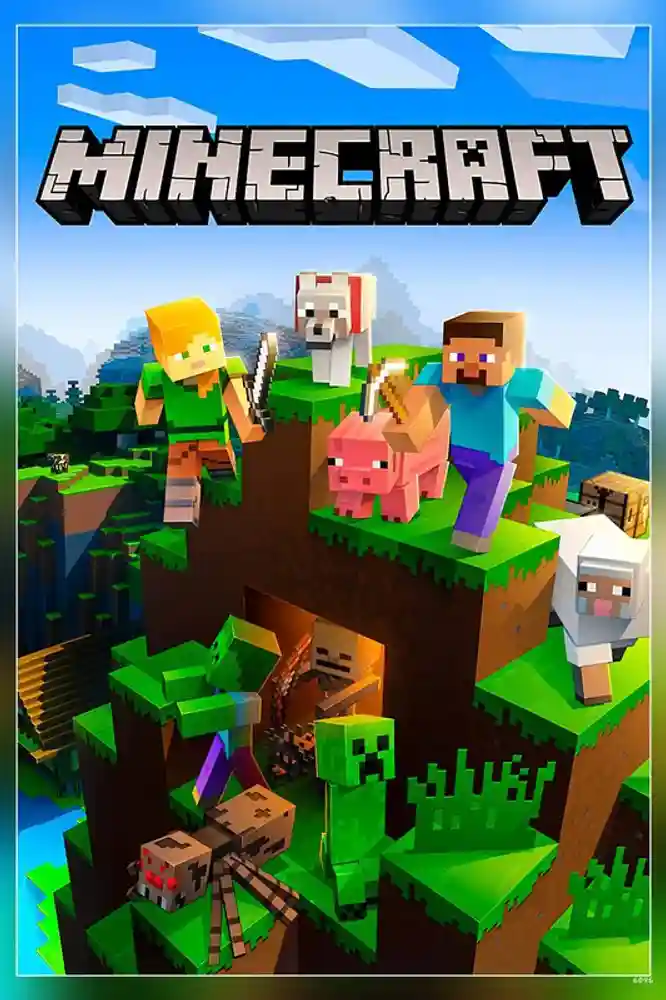
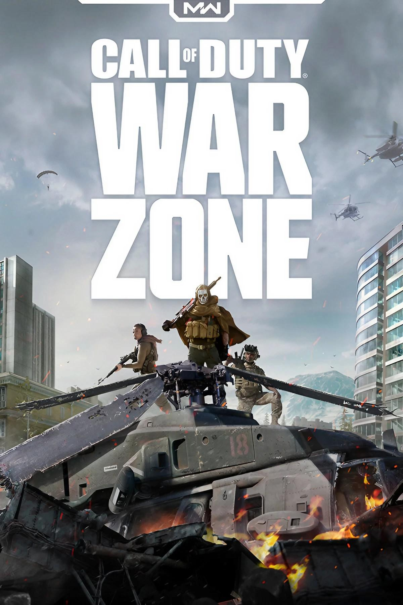
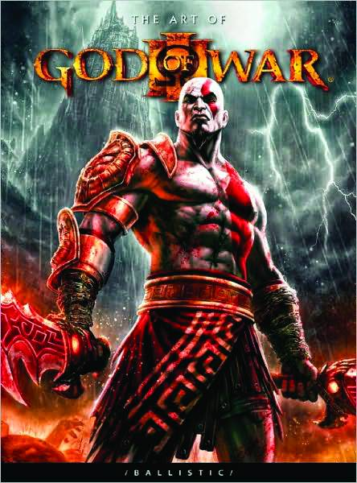
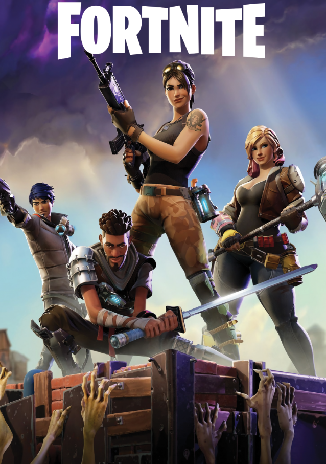

Number 1: Minecraft (Java)
I think this one makes sense, first of all, if you're a bedrock player, GET OUT, java is litterally objectively better in basically every possible way. But I think this is a no brainer for a lot of people Minecraft is the most popular game of all time, selling over 350,000,000 copies. And for good reason, it is amazing in the sense of a sandbox game with loads of interesting features and tons of unique things to explore and build. Minecraft also has that interesting lore and creative mode is basically another game.
Number 2: Call of Duty : Warzone

COD:Warzone is one of my favorite game. The way they nailed the gunplay is insane - every firefight feels intense, and when you wipe out an entire squad, it's pure adrenaline and aura gain. Battle royales were a genuis new addition. And I love the way those loadout drops come in, one of them will be hot garbage, while the other you would sacrafice arm and leg for.
Number 3 God of War 3
God of War 3 is straight up the best ending Kratos' Greek story could've gotten, with him just tearing his way up Mount Olympus like a beast. The boss fights are where this game really shines - you get to throw down with Poseidon, Hades, and Zeus, and finish them off in some of the nastiest ways possible. The fighting feels super smooth with those Blades of Chaos, and picking up new weapons like the Nemean Cestus lets you mix up your beatdowns. The game looks incredible even now - especially when the camera pulls way back to show you just how massive these fights are, like when you're climbing all over Cronos or that crazy opening with Poseidon. Between all the fighting, you get some cool puzzles and climbing sections to catch your breath, and the whole revenge story wraps up with Kratos basically destroying everything in sight. It's exactly what you'd want from a God of War finale.
Number 4 Mario Kart 8 deluxe

Yes I know, I know, mario kart world is coming out in like 3 weeks, but I just want to say how well this game stayed revelent for over 8 YEARS. Sure, GTA V have been here for longer than I have existed(We got Jason before GTA VI). But I think GTA V has kinda fallen off while Mario Kart stayed relevent. And also, I think it's clearly the most popular Switch game, and even though I'm a PC gamer, I gotta understand that Mario kart 8 deluxe is a master peace, period.
Number 5: Fortnite
It may not be in it's peak (RIP 2016-2019) but it's still amazing. Getting a victory royale is that "I'm the goat" moment, and getting drops and packs is amaxing. I love how the skins and collabs are always super cool, and I like the addictiveness